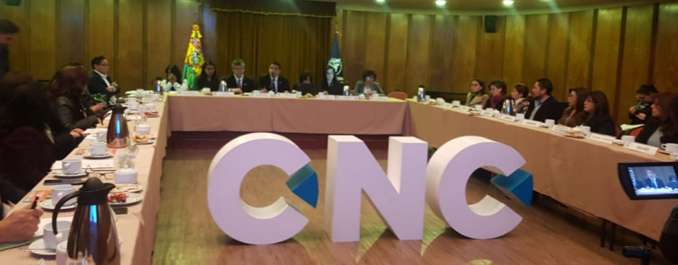
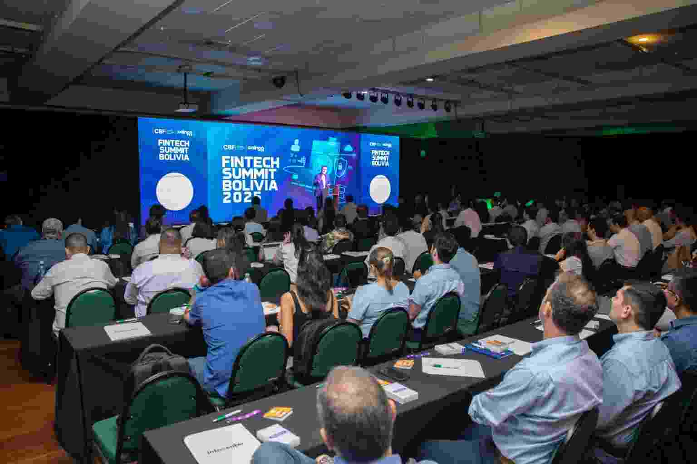

Bolivian Chamber of Commerce
Home Page

Be part of Bolivian Chamber of Commerce
Because we have business solutions desiged for your needs.
Join UsCurrent events
Fintech Summit Bolivia 2025 projects the country toward the digital economy
Spotlights
1
Fintech Summit Bolivia: An annual event that promotes financial innovation and projects the country toward the digital economy
2
Business Roundtable Bolivia: An initiative that facilitates connections between companies.
3
Training and Workshops: We offer training on relevant topics such as sales optimization in adverse economic climates and the use of AI for entrepreneurship